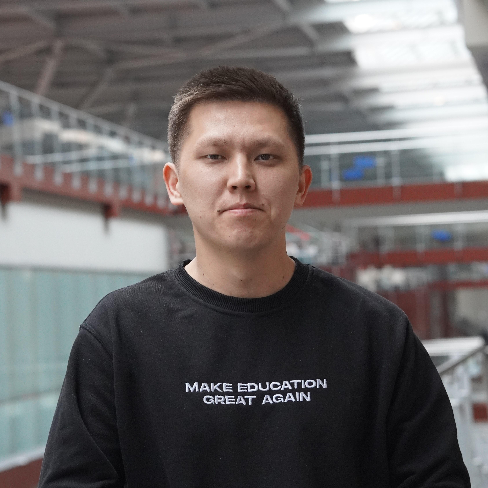
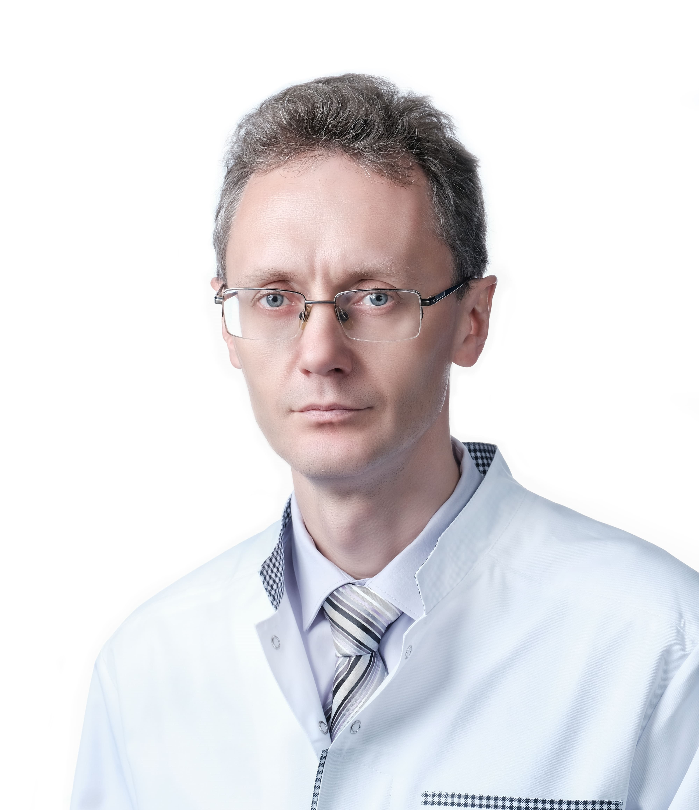

Шойынбек Айсұлтан Арманұлы
Руководитель проекта
Координирует управление проектом и формирует стратегию научных исследований.
Команда проекта
Междисциплинарная команда отвечает за научное руководство, разработку алгоритмов, сбор данных и внедрение решений на основе искусственного интеллекта.
Руководитель проекта
Координирует управление проектом и формирует стратегию научных исследований.

Главный научный сотрудник
Руководит концептуальными задачами, отвечает за методологию и научную экспертизу.

Старший научный сотрудник
Разрабатывает алгоритмы и отвечает за выполнение ключевых научно-технических задач.

Научный сотрудник
Собирает и анализирует данные, администрирует сайт проекта, участвует в разработке алгоритмов.

Младший научный сотрудник
Участвует в сборе и подготовке наборов данных, поддерживает аналитические эксперименты.

Младший научный сотрудник
Поддерживает сбор данных, ведёт отчётность и участвует в разработке прототипов.

Психиатр, психотерапевт
Консультирует по клиническим аспектам, проводит этический контроль и обучает команду.